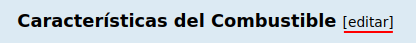

Simulador de hornos de proceso de tiro natural
Alcances, usos y limitaciones.
Algoritmo
Tal como está concebido, el algoritmo de este simulador, elaborado sobre la base de un horno de tiro natural, tipo cabina, que procesa originalmente un residuo atmosférico y cuyo calor absorbido en condiciones normales de operación es de 20.9 MW (71.5 MMBtu/h), es capaz de realizar cálculos en una amplia gama de condiciones de proceso.
Su versatilidad es tal que si se introducen las propiedades de rigor, también es capaz de "procesar" crudos, otros residuos, aceites de calentamiento, y otras cargas líquidas no vaporizantes. No obstante, al incluir cambios en algunas variables sin considerar las limitaciones operacionales y/o mecánicas del horno los resultados podrían no tener sentido real.
Horno
Condiciones de Operación
- Diseño: 23.0 MW (78.79 MMBtu/h) - Máxima capacidad de procesamiento.
- Normal: 20.9 MW (71.5 MMBtu/h) [90,75% del Diseño] - Operación habitual del horno.
-
Turndown: 10.45 MW (35.77 MBtu/h) [45,4% del Diseño] - Condición de mínima capacidad.
No equivale a una condición de "turndown" de los quemadores puesto que podría lograrse con cierto número de quemadores operando normalmente y otros quemadores simplemente apagados.
Gravedad específica @ 15.6°C (60°F) [0,84] - Esta gravedad específica corresponde a un residuo atmosférico. Si se cambia este dato se estará modificando la naturaleza del fluido de proceso lo cual es inusual desde la perspectiva operacional.
Interfaz
En la opción DATOS se puede optar por obtener una tabla sencilla de condiciones operacionales resumidas (condición Base) y/o una tabla comparativa de condiciones Base y Modificada.
Al ingresar en la sección de DATOS aparecerá una nueva opción +DATOS donde se podrá optar por el cálculo detallado de todas las variables consideradas por el simulador y además, por la elaboración de una serie de gráficas con las tendencias de las variables operacionales más importantes.
Para editar el combustible se debe pulsar la opción de "editar" que se encuentra en ambas pantallas de ingreso de datos:
El combustible se define a partir de la composición molar sus componentes individuales. La suma de estos componentes debe ser igual a 100%.
Para acceder a la pantalla de Gráficas y editar la variable de comparación se debe pulsar la opción "variables" en la pantalla de ingreso de +DATOS:

Luego de editar las opciones se accede a la vista de graficas al pulsar "Graficar"